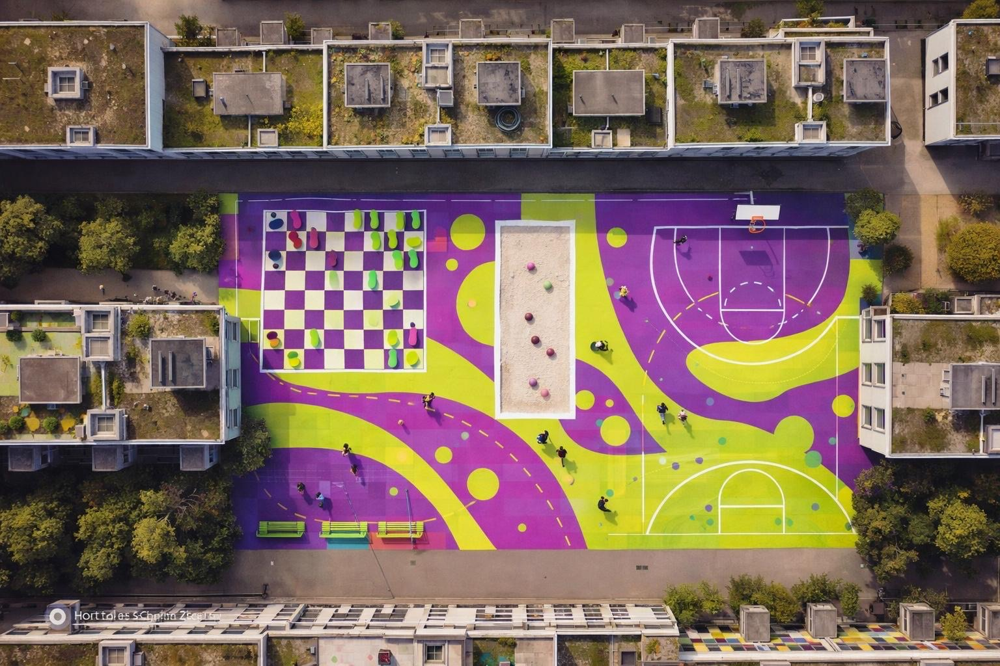

Netto-Null
Wiedikon.
Das Labor der Zukunft.
Die Stadt Zürich hat ein klares Ziel: Bis 2040 klimaneutral werden. Im Pilotquartier Wiedikon/Binz testen wir heute, wie wir morgen leben, konsumieren und uns begegnen werden. Es ist ein Experimentierraum für neue Ideen, die den urbanen Raum transformieren.
Gemeinsam Gestalten.
Netto-Null ist mehr als eine technische Vorgabe – es ist eine soziale Chance. Durch Entsiegelung, Kreislaufwirtschaft und neue Formen der Nachbarschaft schaffen wir ein Quartier, das nicht nur nachhaltiger, sondern lebenswerter für alle ist.
 SYSTEMWECHSEL
SYSTEMWECHSEL
tauschpunkt.
Ressourcen zirkulieren lassen und die Kreislaufwirtschaft im Alltag verankern.

KLIMAREZILIENZPlayground
Binzallee
Hitzeminderung durch innovative Begrünung und soziale Belebung.
tauschpunkt.
Vom Besitz zum Nutzen.
Der „tauschpunkt.“ ist ein physischer Hub für Sharing-Kultur. Er zeigt, wie eine Siedlung durch gemeinschaftliche Ressourcennutzung massiv CO2 einsparen kann, ohne an Lebensqualität zu verlieren.
Die Architektur aus Holz und Stegplatten dient nicht nur dem Zweck, sondern fungiert als leuchtendes Signal für eine neue, bewusstere Form des urbanen Zusammenlebens.
Circular Economy
5.0m x 3.0m Holzmodul
Resource Awareness


Playground Binzallee.
Die vertikale Oase.
In dicht besiedelten Gebieten sind versiegelte Flächen Hitzeinseln. Unser Ansatz: Eine schwebende Begrünung auf 6-7 Metern Höhe, die das Mikroklima kühlt und gleichzeitig Raum für Sport und Spiel lässt.
Durch die Reduktion der Oberflächentemperatur und die Förderung von Biodiversität schaffen wir eine Blaupause für die klimagerechte Transformation von Innenhöfen.
Seilsystem & Kletterpflanzen
Natürliche Kühlung & Sport
Pilotprojekt Wiedikon

Unsere Vision
Wir glauben an ein Zürich, in dem Nachhaltigkeit keine Verzichtserklärung ist, sondern ein Gewinn an Lebensqualität. Unsere Vision vereint die Kraft der **Kreislaufwirtschaft** mit der Notwendigkeit **klimaresilienter Stadträume**.
Vom Verschenken statt Wegwerfen am **tauschpunkt.** bis hin zur Abkühlung unter der grünen Decke des **Playgrounds** – wir schaffen Orte, die ökologische Intelligenz mit sozialem Zusammenhalt verbinden. Wir transformieren graue Asphaltflächen in lebendige, atmende Begegnungszonen, um gemeinsam das Ziel Netto-Null 2040 greifbar zu machen.